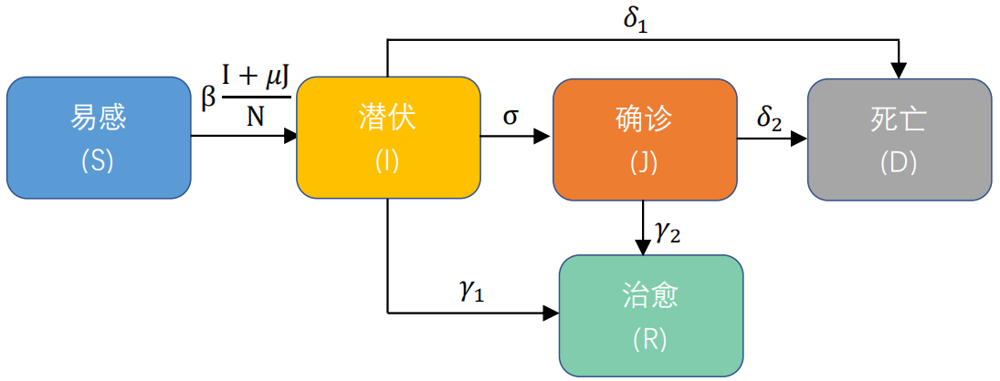

模型选择
模型:
SIR
SEIR
SIJR

感染率 β:
0.8
康复率 γ:
0.2
感染者康复率 γ
1:
0.2
确诊者康复率 γ
2:
0.2
发病率 σ:
0.05
死亡率 δ:
0.05
感染者死亡率 δ
1:
0.05
确诊者死亡率 δ
2:
0.05
传染率下降 μ:
0.05
初始健康数 S
0
:
10000
初始潜伏数 E
0
:
0
初始感染数 I
0
:
3
初始确诊数 J
0
:
0
初始康复数 R
0
:
0
初始死亡数 D
0
:
0
模型预测结果
绝对值
百分比